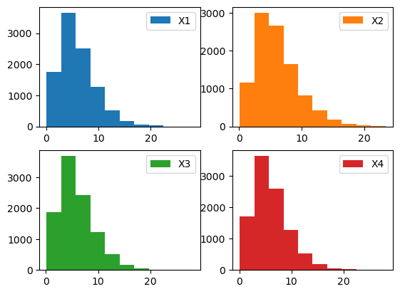

최규빈 교수님 통계전산 수업 정리
수업에서는 Julia를 사용하지만 필요한 부분만 Python으로 바꾸어 작성하였다.
통계 전산
로드맵
- 통계
- 일반통계학 개념의 백업
- 여러가지 분포리뷰, 어떠한 분포에서 샘플을 추출하는 방법
- 수렴
- 추정 및 검정
- 부트스트랩
- 선형회귀분석
- 선형대수학
- 백터공간, rank
- 직교행렬, 사영행렬, 양정치행렬…
- 매트릭스를 해석하는 방식 (이미지, 데이터프레임, 변환)…
- 분해이론: 고유값분해, SVD
- 벡터나 매트릭스의 미분..
베르누이
이항분포
1회당 성공확률이 p. n번을 시행해서 성공한 횟수가 X. 이를 N번 반복해서 나온 성공값들을 분포로 나타낸게 이항분포?
포아송분포 (\(X \sim Poi(\lambda)\))
- 포아송분포의 요약
X의의미: 발생횟수의 평균이 λ인 분포에서 실제 발생횟수를 X라고 한다.
X의범위: 발생안할수도 있으므로 X=0이 가능. 따라서 X=0,1,2,3,…
파라메터의 의미와 범위: λ = 평균적인 발생횟수; λ>0.
pdf:
mgf:
E(X): λ
V(X): λ
단위시간동안 어떤 이벤트가 발생했는데, 그 이벤트의 횟수가 포아송.
포아송분포의 예시
콜센타에 걸려오는 전화의 수, 1시간동안
레스토랑에 방문하는 손님의 수, 하루동안
웹사이트를 방문하는 사람의 수, 1시간동안
파산하는 사람의 수, 1달동안
네트워크의 끊김 수, 1주일동안
How to generate it?
평균 3인 포아송분포에서 100개 샘플을 뽑는 방법
방법1)
array([ 3, 4, 0, 7, 1, 3, 3, 5, 3, 2, 2, 6, 3, 5, 3, 2, 1,
4, 4, 2, 8, 3, 3, 3, 2, 0, 3, 5, 2, 2, 2, 2, 5, 4,
4, 7, 3, 5, 6, 2, 2, 1, 7, 3, 3, 1, 5, 5, 5, 6, 2,
3, 3, 3, 2, 5, 2, 6, 2, 5, 4, 0, 3, 4, 2, 0, 3, 3,
3, 4, 2, 3, 1, 1, 1, 5, 6, 2, 1, 3, 3, 3, 2, 7, 4,
2, 2, 4, 3, 1, 5, 2, 10, 6, 2, 4, 0, 3, 2, 1])plt.hist(pois);
# bar plot으로 나타내는 법
# unique_values, count = np.unique(pois, return_counts=True)
# plt.bar(unique_values, count)
# ax = plt.gca()
# ax.set_xlim([-1,11])
# plt.title("pois")
# plt.xticks(np.arange(0,11,1)); # x축 1간격방법2) 이항분포의 포아송근사를 이용
이론: 이항분포에서 (1) \(n→\infty\) (2) \(p→0\) (3) \(np=\lambda\) 이면 이것은 평균이 \(\lambda\) 인 포아송분포로 근사함.
평균이 \(\lambda\) 인 포아송분포는 \(B(n,\frac{\lambda}{n})\) 로 근사할 수 있다. 이때 \(n\)이 커질수록 더 정확해짐.
N = 10000
λ = 3
n = 10000
p = λ/n
X = np.random.binomial(n, p, N)
Y = np.random.poisson(λ, N)
fig, ((ax1), (ax2)) = plt.subplots(2,1)
ax1.hist(X);
ax2.hist(Y);방법3) 균등분포 → 베르누이 → 이항분포 ≈ 포아송
- 1분동안 맥도날드에 평균 3명이 온다고 생각
- 이건 사실 1초에 성공확률이 0.05인 베르누이 시행을 1번 시행하여 1분동안 총 60회 반복한 것으로 이해할 수 있음.
- 좀 더 세밀하게는 0.001초에 성공확률이 5.0e-5인 베르누이 시행을 1번 시행하여 1분동안 총 60000회 반복한 것으로도 이해할 수 있음. (무한반복 가능)
- 느낌: 하여튼 (1) “엄청 작은 시간”에 (2) “엄청 작은 확률”의 베르누이 시행이 (3) “엄청 많이 독립적으로 반복” 되는 느낌을 기억!! = 포아송 프로세스
fig, ((ax1), (ax2)) = plt.subplots(2,1, figsize=(8,8))
ax1.hist(X)
ax2.hist(np.random.poisson(λ, N));
ax1.set_title("Uniform → Bernoulli → Binomial ≈ Poisson")
ax2.set_title("Poisson")Text(0.5, 1.0, 'Poisson')방법4) 균등분포 → inverse cdf method를 이용해서 생성할 수 있음.
-Inverse CDF Method?? 모든 확률 분포의 누적 분포 함수(cumulative distribution function, cdf)가 균등분포를 따른다는 성질을 이용한 방법
보통 난수를 일으킬 때에는 균등분포 난수 생성기를 이용하여 난수를 일으킨다. 그런데 만약 어떤 특정한 함수를 따르는 난수를 만들어내고 싶다면?? Inverse CDF Method를 사용하면 된다. 추후 수식 관련하여 자세히 다루기.
포아송 분포의 합은 다시 포아송분포가 된다.
이론: \(X \sim Poi(\lambda_1), Y \sim Poi(\lambda_2), X \bot Y \Rightarrow X+Y\sim Poi(\lambda_1+\lambda_2)\)
의미?: (1) 1분동안 맥도날드 매장에 들어오는 남자의 수는 평균이 5인 포아송 분포를 따름. (2) 1분동안 맥도날드 매장에 들어오는 여자의 수는 평균이 4.5인 포아송 분포를 따름. (3) 남자와 여자가 매장에 오는 사건은 독립 \(\rightarrow\) 1분동안 맥도날드 매장에 오는 사람은 평균 9.5인 포아송 분포를 따른다는 의미
평균과 분산의 추정
N = 1000
λ=5
X=np.random.poisson(λ, N)
print(f"평균: {λ}\
\n평균의 추정치: {np.mean(X)}\
\n분산: {λ}\
\n분산의 추정치: {np.var(X)}")평균: 5
평균의 추정치: 4.914
분산: 5
분산의 추정치: 5.134604- 생각해보니까 이론적으로 평균과 분산의 값이 같아야 한다는 걸 알고 있다. 그런데 왜 추정치가 달라야하나?? 둘 중 하나만 있으면 될 것 같다.
mean(X), var(X)로 \(\lambda\)를 추정
fig, ((ax1), (ax2)) = plt.subplots(1,2)
ax1.set_xlim([4.8, 5.2])
ax2.set_xlim([4.8, 5.2])
ax1.set_ylim([0, 30])
ax2.set_ylim([0, 30])
ax1.hist(p1)
ax2.hist(p2)
ax1.set_title("mean")
ax2.set_title("var");히스토그램을 그려보니까 누가봐도 mean(X)로 λ를 추정하는 것이 var(X)로 λ를 추정하는 것보다 좋아보인다.
그냥 평균을 추정한다음 이 값을 평균과 분산이라고 주장하면 안되나? \(\Rightarrow\) 된다!! 이게 바로 MLE
지수분포 \((X \sim Exp(\lambda))\))
지수분포의 요약
- X의 의미: 시간 1에 평균적으로 \(\lambda\)번 발생하는 사건이 있을 때 첫 번째 이벤트가 발생할 때까지 걸리는 시간.
- X의 범위: 시간은 양수이므로 X \(\geq\) 0
- 파라메터의 의미: (1)\(\lambda\) = 시간1에 평균적으로 발생하는 이벤트의 수 (2) 1/\(\lambda\) = 한번의 이벤트가 발생할 때까지 평균적으로 걸리는 시간
- 파라메터의 범위: \(\lambda\)>0
- pdf: \(f(x) = \lambda e^{- \lambda x}\)
- mgf:
- cdf: \(F(x) = 1-e^{-\lambda x}\)
- E(X) = \(\frac{1}{\lambda}\)
- V(X) = \(\frac{1}{\lambda ^2}\)
How to generate it?
평균이 10인 지수분포에서 10000개의 샘플을 뽑는 방법
방법1: 모듈 / 방법2: 포아송 프로세스 / 방법3: inverse cdf method
(방법1)
array([ 2.81250688, 3.51950826, 9.34507485, ..., 1.21136792,
15.43126406, 15.10395178])(방법2) 포아송 \(\rightarrow\) 지수분포 (X), 포아송프로세스 \(\rightarrow\) 지수분포 (O)
- 맥도날드에 시간 1당 0.1명씩 평균적으로 방문한다. 1명 방문하는데에는 평균적으로 시간이 10이 걸린다고 볼 수 있음.
- 따라서 언뜻 생각하면 포아송과 지수분포는 역의 관계라서 포아송 분포를 만들고 역수를 취하면 지수분포를 쉽게 만들 수 있을 것 같다.
- 0이 나온다?
- 생각해보니 포아송은 정수이다. 0이 없다고 쳐도 역수를 취하면 나올 수 있는 값은 1, 1/2, 1/3, 1/4, … 따위임 지수 분포는 \(\frac{1}{0.5}, \frac{1}{1.5}\) 등의 값도 가능해야하는데 포아송은 정수이므로 이러한 역수가 불가능함 (애초에 틀린 접근)
- 아이디어: 극한의 베르누이로 포아송을 만들 때, 몇 번 성공했는지 관심을 가지고 카운팅 했음. \(\Rightarrow\) 조금 응용해서 첫 성공까지 몇 번의 시도를 해야하는지 카운팅을 한다고 생각하면 시간 계산이 가능할 것 같다.
- 결국 “포아송분포 \(\rightarrow\) 지수분포”로 추출하는 것이 아니라 “포아송프로세스 \(\rightarrow\) 지수분포”와 같은 방식으로 추출해야 한다.
fig, ((ax1), (ax2)) = plt.subplots(2, 1, figsize = (8, 8))
ax1.hist(X)
ax2.hist(np.random.exponential(10, N))
ax1.set_title("poisson process → exponential")
ax2.set_title("exponential");- 불평: 샘플하나뽑는데 시간이 오래걸림. (정확도를 올릴수록 더 오래걸림)
(방법3) inverse cdf method - 이론적인 pdf를 알고 있다는 전제가 필요 - 자세하게 살펴보자
Inverse cdf method를 활용하여 지수분포에서 샘플 추출
아래와 같은 2개의 지수분포의 pdf를 고려하자. (평균이 1인 지수분포와 평균이 5인 지수분포) \[f(x)=e^{-x}\] \[g(x)=\frac{1}{5}e^{-\frac{1}{5}x}\]
각각의 pdf를 그려보면 아래와 같다.
x = np.linspace(0, 20, 100)
def fx(x):
return np.exp(-1*x)
def gx(x):
return 1/5 * np.exp(-1/5*x)
fig, ((ax1), (ax2)) = plt.subplots(2,1, figsize=(8,8))
ax1.plot(x, fx(x))
ax2.plot(x, gx(x))
ax1.set_title("$f(x)=e^{-x}$")
ax2.set_title("$g(x)=(1/5)e^{(-1/5)x}$");아래 그래프에서 뽑은 값이 더 클 것 같다. (위 그래프는 왼쪽에 몰려있음)
이번에는 각각의 cdf를 그려보자. \[F(x) = \int^x_0f(\tau)d\tau = \int^x_0 e^{-\tau}d\tau=[-e^{-\tau}]^x_0 = 1-e^{-x}\] \[G(x) = \int^x_0g(\tau)d\tau = \int^x_0 \frac{1}{5}e^{-\tau/5}d\tau=[-e^{-\tau/5}]^x_0 = 1-e^{-x/5}\]
x = np.linspace(0, 20, 100)
def Fx(x):
return 1-np.exp(-1*x)
def Gx(x):
return 1-np.exp(-1/5*x)
fig, ((ax1), (ax2)) = plt.subplots(2,1, figsize=(8,8))
ax1.plot(x, Fx(x))
ax2.plot(x, Gx(x))
ax1.set_xticks(np.arange(0,21,1))
ax2.set_xticks(np.arange(0,21,1))
ax1.set_title("$F(x)=1-e^{-x}$")
ax2.set_title("$G(x)=1-e^{(-1/5)x}$");print(f"{1, Fx(1)} 위 그래프에서 약 {round(Fx(1),2)*100}%는 1보다 작다.")
print(f"{5, Fx(5)} 위 그래프에서 약 {round(Fx(5),2)*100}%는 5보다 작다.")(1, 0.6321205588285577) 위 그래프에서 약 63.0%는 1보다 작다.
(5, 0.9932620530009145) 위 그래프에서 약 99.0%는 5보다 작다.print(f"{1, Gx(1)} 아래 그래프에서 약 {round(Gx(1),2)*100}%는 1보다 작다.")
print(f"{5, Gx(5)} 아래 그래프에서 약 {round(Gx(5),2)*100}%는 5보다 작다.")(1, 0.18126924692201818) 아래 그래프에서 약 18.0%는 1보다 작다.
(5, 0.6321205588285577) 아래 그래프에서 약 63.0%는 5보다 작다.- cdf 해석 - 위(평균이 1인 지수분포) = 5정도면 거의 cdf의 값이 1에 가까워짐. - 아래(평균이 5인 지수분포) = 5정도면 값이 0.63정도임 \(\rightarrow\) 100번 뽑으면 5보다 작은게 63개 정도…
- cdf의 y축에서 랜덤변수를 발생시킨다음 \(\rightarrow \downarrow\)와 같이 이동하여 \(x\)축에 내린다고 생각해보자. (역함수를 구하는 것) - 위: 대부분 5이하에 떨어짐 - 아래: 약 63% 정도만 5이하에 떨어짐.
def Finv(x): # 평균이 1인 지수분포 cdf의 역함수
return -np.log(1-x)
def Ginv(x): # 평균이 5인 지수분포 cdf의 역함수
return -5*np.log(1-x)
u = np.random.uniform(0,1,5)
fig, ((ax1), (ax2)) = plt.subplots(2,1, figsize=(8,8))
ax1.plot(x, Fx(x))
ax1.plot([0,0,0,0,0], u, 'or', )
ax1.plot(Finv(u), [0,0,0,0,0], 'ob')
ax2.plot(x, Gx(x))
ax2.plot([0,0,0,0,0], u, 'or', )
ax2.plot(Ginv(u), [0,0,0,0,0], 'ob')
ax1.set_xticks(np.arange(0,21,1));
ax2.set_xticks(np.arange(0,21,1));
ax1.set_title("Mean = 1")
ax2.set_title("Mean = 5");- 빨간색: 균등분포
- 파란색: 이게 지수분포 같은데?
inverse cdf method 알고리즘 정리
\(X_1, X_2, \dots, X_n \overset{iid}{\sim} F\)를 생성하고 싶다면?
- 균등분포에서 \(n\)개의 난수를 독립적으로 생성한다. 이를 \(U_1, U_2, \dots, U_n\)이라고 하자.
- \(X_1 = F^{-1}(U_1), X_2 = F^{-1}(U_2),\dots,X_n = F^{-1}(U_n)\) 이라고 놓는다.
- 예제1: inverse cdf를 이용하여 평균이 1인 지수분포 10000개를 생성하여 보자.
(풀이)
fig, ((ax1), (ax2)) = plt.subplots(2,1, figsize=(8,8))
u = np.random.uniform(0,1,10000)
ax1.hist(Finv(u))
ax2.hist(np.random.exponential(1, 10000))
ax1.set_xticks(np.arange(0,21,1));
ax2.set_xticks(np.arange(0,21,1));
ax1.set_title("inverse cdf")
ax2.set_title("exponential")Text(0.5, 1.0, 'exponential')지수분포의 무기억성
-수리통계학 책
- 지수분포 평균은 \(\frac{1}{\lambda}\) 인데 수식에서 사용하는 값은 \(\lambda\)임 계산할 때 주의
- 이산형 확률분포에서 기하확률변수가 무기억 성질을 갖는 것처럼 연속형 확률변수 중에서는 지수확률변수가 동일한 성질을 지닌다.
- \(X \sim EXP(\frac{1}{\lambda})\) 이면, 양의 실수 \(a\)와 \(t\)에 대해서,
\[P(X>a+t|X>a) = P(X>t)\]
가 성립한다.
- 위 정리의 의미: 가령, 확률변수 \(X\)가 어떤 기계부품의 수명이라고 하면, \(P(X>a+t|X>a)\)는 시점 \(a\)에서 기계부품의 고장이 없을 때, 최소한 시간 \(t\)만큼 더 고장이 없을 사건에 대한 확률을 뜻한다. 따라서 정리의 무기억 성질은 변수 \(X\)가 시점 \(a\)에서 그동안 기계부품의 고장이 없었다는 조건을 ’기억’하지 않고, 앞으로 시간 \(t\)만큼 더 고장이 없을 것만 고려한다는 것을 뜻하는 것으로, \(a\)시간만큼 일한 기계부품이 앞으로 \(t\)시간만큼 더 작동하는 확률이나 새 기계부품이 앞으로 \(t\)시간 만큼 더 작동하는 확률이나 같다는 것이다.
예시 \[P(X>1) = P(X>10|X>9)\]
좌변: 시간을 1 기다려서 이벤트가 발생 안 할 확률
우변: 시간을 9 기다렸는데 이벤트가 발생 안했음 \(\rightarrow\) 시간을 10기다려서 이벤트가 발생 안 할 확률
예를들어서 \(\lambda = 0.1\)이라면 한번 이벤트 발생하는데 평균 시간 10이 걸린다는 의미.
- 좌변은 이제 시간 1 기다림. (2) 우변은 시간 9 기다림. 곧 “약속된” 시간 10이 완성됨 \(\Rightarrow\) 우변이 더 확률이 크지 않을까? \(\Rightarrow\) 아니라는 것!!
이해: 지수분포의 근본? 포아송 프로세스
- 엄청 짧은 시간
- 엄청 작은 확률
- 엄청 많은 베르누이 시행이 “독립적”으로 수행 \(\rightarrow\) 지금까지 실패했다고 해서 이후에 성공확률이 높아지는건 아님.
- 우변: 이미 시간 9 동안 무수히 많은 독립적인 베르누이 시행을 놓친상태임. 그 이후의 시행은 모두 독립이므로 좌변의 확률보다 더 크다고 볼 수 없음.
- 무기억성 = 과거는 중요하지 않음! \(\Rightarrow P(X>1) = P(X>2|X>1) = P(X>3|X>2) = \dots\)
몬테카를로 적분
예제1: 아래를 계산하라
\[\int^\infty_0 xe^{-x}dx = ?\]
(손풀이) \(\int^\infty_0xe^{-x}dx=??=1\)
(손풀이2) \(\int^\infty_0xe^{-x}dx= \int^\infty_0x\times e^{-x}dx\) 은 \(\lambda=1\)인 지수분포의 평균이다. 따라서 답은 1.
(컴퓨터를 이용한 풀이)
예제2: 아래를 계산하라
\[\int^\infty_0 x^2e^{-x}dx = ?\]
(컴퓨터를 이용한 풀이)
분산 = 제곱의평균 - 평균의제곱 이므로
제곱의평균= 분산 + 평균의제곱 = \(1+1^2\)
생략
예제3: ~
박스뮬러 변환
\(\lambda\)에 따른 포아송과 지수분포의 히스토그램 변화 관찰
inverse cdf의 이론적 근거
어느 사격수 이야기
\[X_1, X_2 \overset{iid}{\sim} N(0,1) \Rightarrow X_1^{2}+X_2^{2}\sim\chi^2(2)\]
\[X_1, X_2 \overset{iid}{\sim} N(0,1) \Rightarrow \frac{1}{2}(X_1^{2}+X_2^{2})\sim Exp(1)\]
- 점추정(모수를 모르는 상태에서 예측하는 것), 구간추정(정확한 점을 예측하기는 어려우니) + 95% 신뢰구간
- 정규분포, 카이제곱, 지수, 감마 분포의 관계
정규분포
정규분포 요약
- X의 의미:
- X의 범위: \(x\in \mathbb{R}\)
- 파라메터의 의미와 범위: \(\mu\) 평균, \(\sigma^2\)=분산, \(\mu \in \mathbb{R}, \sigma^2>0\)
- pdf: \(f(x)=\frac{1}{\sqrt{2\pi\sigma^2}}e^{-\frac{1}{2}(\frac{x-\mu}{\sigma})^2}\)
- mgf:
- E(X): \(\mu\)
- V(X): \(\sigma^2\)
how to generate it?
방법3: (지수분포, 유니폼) → 서로 독립인 2개의 정규분포
note 1
- 이론: \(X_1, \dots, X_n \overset{iid}{\sim} N(\mu, \sigma^2) \Rightarrow \frac{\bar{X}-\mu}{\sigma/\sqrt{n}}\sim N(0,1)\)
N=10000000
n=25
σ=5
μ=7
y1 = [np.mean(np.random.normal(μ,σ,n)) for i in range(N)]
y2 = np.random.normal(μ,σ/np.sqrt(n),N)
plt.xticks(np.arange(1,14,1))
plt.hist(y1, color='blue', bins=1000, histtype='step')
plt.hist(y2, color='red', alpha=0.2, bins=1000);- 예제1: \(\bar{X}\)는 분산이 100, 평균이 \(\mu\)인 분포에서 추출한 크기가 25인 확률표본의 평균이다. 관찰된 표본의 평균이 \(\bar{x} = 67.53\)일때 \(\mu\)에 대한 95% 신뢰구간을 구하여라.
(풀이1)
3.92342365350967- 뒷면해석: \(X_1,\dots,X_{25} \overset{iid}{\sim} N(0,10) \Rightarrow P(-3.92\leq\bar{X}\leq 3.92) \approx 0.95\) (평균을 0으로 가정한 상황)
- 뒷면해석의 일반화: \(X_1,\dots,X_{25} \overset{iid}{\sim} N(\mu,10) \Rightarrow P(\mu-3.92\leq\bar{X}\leq \mu+3.92) \approx 0.95\)
- 앞면느낌의 해석: \(X_1,\dots,X_{25} \overset{iid}{\sim} N(\mu,10) \Rightarrow P(\bar{X}-3.92\leq\mu\leq \bar{X}+3.92) \approx 0.95\)
(풀이2)
note2 (CLT)
이론: (1) \(X_1,\dots,X_n\overset{iid}{\sim}F\) and (2) \(V(X_1)<\infty\Rightarrow\frac{\bar{X}-\mu}{\sigma/\sqrt{n}}\overset{d}{\rightarrow}Z, \ \ \ \ Z\sim N(0,1)\)
뒷부분은 \(\bar{X}\overset{d}{\rightarrow}Z', \ \ \ Z'\sim N(\mu, \frac{\sigma}{\sqrt{n}})\)로 해석가능
- 확인
가설검정
상황극
- 상황 - 동원참치를 좋아하는 자취생이 있었음. - 그런데 양이 적었음. - 캔의 뒷면을 보니까 중량이 45g이라고 함.
- 의심 - 아무리봐도 참치캔의 무게가 45g보다 적은 것 같음.
- 문의 - (문의) 참치캔이 45g보다 적다. \(\to\) (답변) 참치캔의 무게 \(\sim N(45, 1)\) - (생각) 참치캔의 무게는 확률분포라는 것을 따르기 때문에 항상 45g이 아니고 45g보다 작을 수 있다는 논리 - (화남) 그러니까 내가 좀 운이 없는 편인 것이지 우리회사 잘못이 아니란 이야기
- 실험 - 아무리 생각해도 미심쩍어서 한 박스(30개가 들어가 있음)를 사서 모두 무게를 재보았다. - 30개 평균무게를 계산하니까 44.50이었다.
- 고민 - 실험결과가 44.50g이 나와봤자 확률변수라는 논리로 또 다시 방어가 가능할 듯 하다. - 참치회사에 항의해봤자 “고객님께서 운이 좀 많이 없는 케이스셔요” 라고 둘러댈 것 같다.
해결방법
- 아이디어
- 가만히 생각해보니까 참치캔의 무게가 10g이 나와도 운이 없다고 둘러대면 그만일 것 같다. 참치회사 입장에서는 거의 기적의 논리인 셈.
- 내가 얼마나 운이 없는 케이스인지 정확한 확률로 계산해보자. \(\to\) 참치회사의 주장이 참이라고 가정하자. 그리고 그 세계에서(참치회사의 주장이 참인 세계에서) 나보다 운이 없는 케이스가 14,000,605의 경우의 수 중에서 몇개나 발생했는지 알아보자.
- 만약에 14,000,605의 경우의 수 중에서 나보다 운이 없는 케이스가 0명이라면? 이건 참치회사가 거짓말을 하고 있다고 생각해도 무방하다.
array([44.44060247, 44.58578509, 45.18637014, 42.88182346, 43.44174295,
45.31328539, 44.61031359, 44.35194961, 43.66617982, 44.05899114,
44.79021104, 46.45200423, 44.9289538 , 44.72000347, 46.99494376,
44.79112521, 46.8076755 , 44.83231809, 45.64099509, 46.78136459,
41.87449512, 44.6893391 , 45.36937168, 43.9631011 , 46.32436898,
44.33644491, 46.91034175, 46.02706234, 43.36750549, 46.23646942])0.0030819382448115636- 자취생의 반론 - 보세요! p-value가 0.05만 되었더라도 내가 운이 매우 나쁜 케이스인가보다 하고 넘어가려고 했어요. 그런데 내가 \(p\)-value를 계산했는데 0.003이에요. 이건 너무 낮은 확률입니다. 그래서 저는 당신들이 사기친다고 볼 수 밖에 없어요!
이론
- 통계학과 교수님 등장
- 자취생의 말은 이론적으로 옳다.
참치회사의 주장을 \(H_0\)라고 하고, 학생의 주장을 \(H_1\)이라고 하자.
\[H_0:\mu=45\] \[H_1:\mu<45\]
자취생은 \(X_i\sim N(\mu,1)\)에서 30개의 샘플을 얻어서 평균을 구했으며 이때 평균값은 \(\bar{x}=44.5\)이다. 참치회사의 주장이 맞다는 전제하에서 자취생보다 더 극단적인 \(\bar{x}\)를 얻을 확률은 아래와 같다. \[P(\bar{X}\leq 44.5|H_0 \ \text{is true}) = P(\bar{X}\leq 44.5|\mu=45)\]
우변의 식을 정리하면
\[P(\bar{X}\leq 44.5|\mu=45) = P(\frac{\bar{X}-\mu}{\sigma/\sqrt{n}}\leq\frac{44.5-\mu}{\sigma/\sqrt{n}}\bigg|\mu=45)\]
우선 \(\sigma=1\)이고 참치회사의 주장이 맞다고 전제하였으므로 \(\mu=45\). \(n\)은 한 박스에 포함된 참치캔의 수이므로 이 경우는 \(n=30\)이다. 따라서 \(\frac{44.5-\mu}{\sigma/\sqrt{n}}\approx-2.73861\)이다. 한편 \(\frac{\bar{X}-\mu}{\sigma/\sqrt{n}}\sim N(0,1)\) 이므로 (note1의 내용) 구하는 확률 얻기 위해서는 단지 아래만 계산하면 된다.
\[P(Z\leq-2.73861), \ Z\sim N(0,1)\]
이 확률은 대략적으로 0.00308 인데 이것은 자취생이 시뮬레이션으로 얻은 0.00306와 거의 비슷하다.
(보충학습)
2차 공방
- 이론의 회피 - (참치회사) 이후에 저희가 추가 조사해보니까 참치캔의 분포가 딱 정규분포를 따르진 않더라고요? - (참치회사) 그런데 교수님의 논리전개는 정규분포라는 가정하에 성립하니까 우리의 추가조사 결과에는 적용할 수 없을 것 같다.
- 카운터 - 중심극한정리에 의하여 분포상관없이 적당한 \(n\)이 보장되기만 한다면 자취생의 시뮬레이션 결과와 교수님의 주장은 여전히 유효하다.
숙제
- 자취생의 샘플이 \(\bar{x}=44.5\)가 아니라 \(\bar{x}=44.8\)이었다고 할 때 p-value를 구해보라.
note3: delta method (생략)
위치모수와 척도모수
- 정규분포 특징
이론: \(Z\sim N(0,1) \Rightarrow aZ+b \sim N(b,a^2)\)
생각보다 이거 엄청 신기한 기능이에요
정규분포에 어떠한 상수를 더해도 정규분포, 어떠한 상수를 곱해도 정규분포, 더하고 곱해도 정규분포!
- 위치모수, 척도모수
확률변수 \(Z\)가 분포 A를 따를 때 \(Z+b\)도 분포 A를 따름 \(\Rightarrow\) 분포A는 위치모수를 가짐
확률변수 \(Z\)가 분포 B를 따를 때 \(aZ\)도 분포 B를 따름 \(\Rightarrow\) 분포A는 척도모수를 가짐
확률변수 \(Z\)가 분포 C를 따를 때 \(aZ+b\)도 분포 C를 따름 \(\Rightarrow\) 분포A는 위치모수와 척도모수를 가짐
- 예시:
분포C: {{정규분포, 균등분포, 로지스틱, 이중지수, 코쉬}}
분포A: 분포C와 동일
분포B: 분포C \(\cup\) {{지수분포, 감마분포}}
분포C - 분포A: 없다고 생각하세요..
분포C - 분포B: {{지수분포, 감마분포}}
(예제1)
(예제2)
(예제3)
. . . .
카이제곱분포: \(X\sim \chi^2(k)\)
motive
(예제) \(X_i\overset{iid}{\sim}N(7,\sigma^2)\)일 때 아래를 test 하고 싶다고 하자 \[H_0: \sigma^2=4\] \[H_1: \sigma^2<4\] 30개의 샘플을 확보하여 \(\xi=\frac{1}{30}\sum^{30}_{i=1}(x_i-7)^2\)를 계산하였으며 계산결과 \(\xi=2.72\)가 나왔다고 하자. \(p\)-value를 구하여라.
(풀이1)
- 생각보다 나올법한 확률이다.
- 분산이 4가 아닌 것 같다라고 주장하기 위해서는 (95%)
- 2.46보다 같거나 작아야한다.
(풀이2)
\(\xi = \frac{1}{30}\sum^{30}_{i=1}(x_i-7)^2\)는 어떠한 분포A에서 발생한 샘플이라고 볼 수 있다. 그 A의 분포를 이론적으로 잡아보자.
이론: \(\sum^n_{i=1}Z_i^2\sim\chi^2(n)\), where \(Z_i\overset{iid}{\sim}N(0,1).\) 이러한 이론이 있다.
관찰: 우리예제의 경우에는 \(H_0\)가 참이라는 가정하에 \(\sum^{30}_{i=1}(\frac{X_i-7}{2})^2\sim\chi^2(30)\)
주장: \(\xi\times\frac{30}{4}=\sum^{30}_{i=1}(x_i-7)^2\)는 \(\chi^2(30)\)에서 뽑힌 샘플이다.
- 분산이 4는 아닌 것 같다라고 주장하려면? (95%)
\(\xi \times 30/4 = 18.492660981953467\)라는 말이니까
- 2.46보다 같거나 작아야한다. (위와 동일)
카이제곱 분포 요약
- X의 의미: 서로 독립인 표준정규분포의 제곱합
- X의 범위: \(x\in (0,\infty)\)
- 파라메터의 의미: \(k\)는 자유도, 표준정규분포 제곱을 몇개 합쳤는지…
- 파라메터의 범위: \(k=1,2,3,4,\dots\)
- pdf:
- mgf:
- E(X): \(k\)
- V(X): \(2k\)
대의적 정의
- \(X\sim\chi^2(k)\Leftrightarrow X \overset{d}{=} Z_1^2+\dots+Z^2_k\), where \(Z_i\overset{iid}{\sim}N(0,1)\)
How to generate it?
자유도가 4인 카이제곱분포에서 100개의 샘플을 얻는 방법
(방법1)
(방법2) 정규분포 \(\rightarrow\) 카이제곱분포
[0.9470195437591595,
3.1040636594475677,
2.2264229504547757,
5.070560026199548,
5.5961173298844225](방법3) 지수분포 \(\rightarrow\) 카이제곱분포
복습: \(X, Y \overset{iid}{\sim} N(0,1) \Rightarrow R^2/2 \sim Exp(1)\), where \(R^2 = X^2+Y^2\)
즉, \(2 \times \frac{R^2}{2} + 2 \times \frac{R^2}{2} = Z_1^2 + Z_2^2 + Z_3^2 + Z_4^2 \sim \chi^2(4)\)
[1.8829768607694999,
0.9336651649834132,
5.965820376025277,
0.8428830673590306,
8.645433131925193][np.random.exponential(2)+np.random.exponential(2) for i in range(100)][:5]
#지수분포는 scale parameter를 가지기 때문에.[0.8591426263189498,
5.769427223696833,
7.027424120087312,
4.539451879434549,
4.229829641106975]N=10000
X1 = np.random.chisquare(4, N)
X2 = [np.sum(np.random.normal(0,1,4)**2) for i in range(N)]
X3 = [np.random.exponential(1)*2 + np.random.exponential(1)*2 for i in range(N)]
X4 = [np.random.exponential(2) + np.random.exponential(2) for i in range(N)]
fig, ((ax1,ax2), (ax3,ax4)) = plt.subplots(2,2, figsize=(8,8))
ax1.hist(X1, label='X1', bins=50)
ax2.hist(X2, label='X2', bins=50)
ax3.hist(X3, label='X3', bins=50)
ax4.hist(X4, label='X4', bins=50)
ax1.legend(); ax2.legend(); ax3.legend(); ax4.legend()- 정리하면 아래와 같이 된다.
\(Y \sim \chi^2(4)\)
\(Y \overset{d}{=}Z_1^2+Z_2^2+Z_3^2+Z_4^2\), where \(Z_i\overset{iid}{\sim}N(0,1)\)
\(Y \overset{d}{=}2\frac{Z_1^2+Z_2^2}{2}+2\frac{Z_3^2+Z_4^2}{2}\), where \(R^2_i/2\overset{iid}{\sim}Exp(1)\)
\(Y \overset{d}{=} X_1 + X_2\), where \(X_1, X_2 \overset{iid}{\sim}Exp(2)\) 마지막은 척도모수와 관련된..?
- 자유도가 6인 카이제곱분포 - 표준정규분포 6개를 제곱하여 합친것과 같다. - 평균이 2인 지수분포 3개를 합친것과 같다.
- 자유도가 k인 카이제곱분포 - 표준정규분포 k개를 제곱하여 합친것과 같다. - 평균이 2인 지수분포 k/2개를 합친것과 같다. (?) \(\to\) 감마분포의 모티브
note: 표본분산의 분포
- 이론: \(X_1,\dots,X_n\overset{iid}{\sim}N(0,1) \Rightarrow \frac{(n-1)S^2}{\sigma^2}\sim \chi^2(n-1)\)
- 나중에 다시 다룸..
카이제곱 분포의 합
- 이론: $X^2(k_1), Y^2(k_2), XY X+Y ^2(k_1+k_2) $
히스토그램
자유도가 2인 카이제곱 = 평균이 2인 지수분포
카이제곱은 자유도가 커질수록 대칭이 되어간다.
중심의 위치는 자유도의 값과 비슷
감마분포: \(X\sim\Gamma(\alpha, \beta)\)
감마분포 요약
X의 의미: 서로 독립인 지수분포를 \(\alpha\)개 합친 것, 시간 1에 평균적으로 \(\lambda\)번 발생하는 사건이 있을 때 \(\alpha\)번째 사건이 발생할 때까지 걸리는 시간
X의 범위: \(x\in(0,\infty)\)
파라메터의 의미: \(\alpha=\)지수분포를 더한 횟수(의 확장버전), \(\beta=\frac{1}{\lambda}=\)지수분포의 평균
파라메터의 범위: \(\alpha>0, \beta>0\)
pdf: \(\frac{1}{\Gamma(\alpha)\beta^\alpha}x^{\alpha-1}e^{-x/\beta}\)
mgf:
E(X): \(\alpha\beta\)
V(X): \(\alpha\beta^2\)
대의적 정의(\(\alpha\)가 자연수일 경우)
\(X\sim\Gamma(\alpha,\beta)\overset{d}{\Leftrightarrow}Z_1+\dots+Z_\alpha\), where \(Z_i\overset{iid}{\sim}Exp(\frac{1}{\beta})\)
\(Exp(\frac{1}{\beta})\)는 평균이 \(\beta\)인 지수분포
how to generate it?
\(\Gamma(3,2)\)를 1000개 생성하라.
(방법1)
array([ 9.71933815, 7.99068886, 7.56259455, 14.96478038, 7.9842099 ])(방법2) 지수분포 → 감마분포
[2.206747933276282,
10.457792034901699,
11.763758964906064,
9.883464276208098,
8.29207809727784](방법3) 표준정규분포 이용
[np.sum(np.random.normal(0,1,2*a)**2) for i in range(1000)][:5]
# 방법3이 가능한 이유는 2a가 현재 자연수이고, b=2 이기 때문.[1.534278807696258,
3.106678006479342,
4.081251489899774,
15.071812425431794,
6.94872725696303](방법4) 카이제곱분포 이용
array([ 2.7665365 , 10.11844372, 3.20742109, 4.76564108, 10.56994416])- 확인
N=10000
fig, ((ax1, ax2), (ax3, ax4)) = plt.subplots(2,2)
ax1.hist(np.random.gamma(a, b, N), label = 'X1')
ax2.hist([np.sum(np.random.exponential(b, a)) for i in range(N)], label = 'X2', color='C1')
ax3.hist([np.sum(np.random.normal(0,1,2*a)**2) for i in range(N)], label = 'X3', color='C2')
ax4.hist(np.random.chisquare(2*a, N), label = 'X4', color='C3')
ax1.legend(); ax2.legend(); ax3.legend(); ax4.legend()
감마분포와 카이제곱분포의 관계
- 이론: \(X\overset{d}{=}Y,\) where \(X\sim\chi^2(k)\) and \(Y\sim\Gamma(\frac{k}{2},2).\)

척도모수
- 감마분포도 척도모수를 가짐
- 감마분포의 곱셈을 해도 감마분포가 된다
감마분포의 합
- 이론: \(X\sim\Gamma(\alpha_1,\beta), Y\sim \Gamma(\alpha_2, \beta), \ \ X\bot Y \Rightarrow X+Y\sim \Gamma(\alpha_1 + \alpha_2, \beta)\)
지수분포의 다양한 표현
- 지수분포는 다양하게 표현된다.
경우1: \(X\sim Exp(\theta), f(x)=\frac{1}{\theta}e^{-\frac{x}{\theta}}\)
경우2: \(X\sim Exp(1/\lambda), f(x)=\lambda e^{-\lambda x}\)
경우3: \(X\sim Exp(\lambda), f(x)=\lambda e^{-\lambda x}\)
- 기억할 것
경우1: 지수분포의 모수는 평균, 지수분포의 파라메터는 \(\theta = \frac{1}{\lambda}\) 으로 정의하여 새롭게 사용
경우2: 지수분포의 모수는 평균, 지수분포의 파라메터는 포아송의 \(\lambda\) 를 재활용
경우3: 지수분포의 모수는 평균의 역수, 지수분포의 파라메터는 포아송의 \(\lambda\) 를 재활용.
- 노테이션의 숨은 의도들 (교수님 생각)
경우2: 포아송분포의 파라메터도 그대로 쓰고 싶고, “지수분포의 모수 = 지수분포의 평균”과 같이 만들고 싶음
경우1: 경우2에서는 \(X\sim Exp(1/\lambda)\) 로 표현되어서 모수가 역수로 되어있어 헷갈림. 그냥 포아송분포의 \(\lambda\) 를 버리는 편이 좋겠음. 지수분포의 평균을 의미하는 \(\theta\) 를 새롭게 정의하고 이 \(\theta\) 를 중심으로 pdf를 만듦
경우3: 경우2에서는 \(X\sim Exp(1/\lambda)\) 로 표현되어서 모수가 역수로 되어있어 헷갈림. 그냥 모수는 그대로 \(Exp(\lambda)\) 를 쓰고 지수분포의 평균을 모수의 역수로 정의하는 것이 좋겠음.
- 아무튼 여러가지 방식으로 표현합니다.
경우1: 줄리아, 파이썬, 위키
경우2: 교수님께서 공부한 교재. 요즘은 이렇게 잘 안쓰는 것 같음
경우3: R, 위키
- 교수님께서는 평균이 314인 지수분포의 pdf는 \(f(x) = \frac{1}{314} e^{-x/314}\) 이다 ← 이렇게 외우셨다고 함
숙제
- 평균이 2인 지수분포를 이용하여 자유도가 20인 카이제곱분포를 생성하여라
\(\Gamma (\frac{\alpha}{2}, 2) = \chi^2(\alpha)\) 이므로 \(\alpha\)에 20을 대입하면 \(\Gamma (10, 2) = \chi^2(20)\)
따라서 평균이 2인 지수분포 10개의 합이다.
ax1, ((ax1), (ax2)) = plt.subplots(2,1)
ax1.hist([np.sum(np.random.exponential(2, 10)) for i in range(10000)], bins=50)
ax2.hist(np.random.chisquare(20, 10000), bins=50, color='C1');
참고: 검정의 형식 논리
- 검정을 진행하는 방법은 아래와 같다.
- 기: 누군가가 (혹은 세상이) \(H_0\)가 참이라고 주장한다. 나는 \(H_1\)이 참인 것 같다.
- 승: 누군가와 (혹은 세상과) 싸우기 위하여 샘플을 수집하고 검정통계량을 구한다.
- 전: 검정통계량의 분포를 잡아내서 \(p\)-value를 계산한다. 이 \(p\)-value는 “니가 틀렸겠지”라는 주장에 대한 카운터.
- 결: \(H_0\)가 참일지 \(H_1\)이 참일지 판단. 절대적인 기준은 없음. (하지만 굉장히 보수적인 사람이라도 \(p\)-value가 0.05보다 작으면 \(H_1\)이 참이라고 인정)
- 포인트는 검정통계량의 분포를 잡아내는 것인데, \(H_0\)가 참이라는 전제하에 시뮬레이팅 해도 되고 이론적인 분포를 손으로 유도해도 된다.
- 당연히 컴퓨터가 없던 시절에는 시뮬레이팅이 불가능했으므로 “이론적으로 유도 + 통계표(?)”를 이용해서 \(p\)-value를 계산해야 했다.
- 다양한 분포를 공부하는 이유? 검정통계량의 이론적 분포를 잡아내기 위해서!+ \(\alpha\)
- 카이제곱분포를 왜 공부해야? 정규분포를 따르는 샘플의 분산을 test하기 위해서! + \(\alpha\)
! p-value 관련하여 내가 정리해보기.
귀무가설 H0: 연구자가 테스트하고자 하는 가설을 부정하는 가설. 무작위로 발생한 것이라고 가정
대립가설 H1: 귀무가설을 기각하고자 하는 가설. 보통은 연구자의 주장이나 가설
p-value는 귀무가설이 사실일 확률을 나타낸다. 그 값이 낮을수록 귀무가설을 기각하는 경향이 강해진다. 보통은 특정 유의수준(\(\alpha\))보다 작은 p-value를 가지면 귀무가설을 기각한다. 유의수준은 0.05나 0.01이 많이 사용된다.
예를 들어, 우연히 어떠한 값이 나왔을 때 이 값과 같거나 더 극단적인 값이 나올 확률이 p-value이다. 예를들어 p-value가 0.04이 나왔다고 했을 때 이 값은 가정한 분포에서 우연히 나올 확률이 4%라는 것이고, 랜덤으로 이러한 극단적인 값이 나올 확률이 매우 낮으므로 통계적으로 유의하다고 볼 수 있다.(유의수준을 0.05(5%)로 설정한 경우에. 만약 유의수준을 0.01로 설정하였다면 이 값은 유의하지 않다.)
! 검정의 종류와 목적 관련하여 내가 정리해보기.
- t-test: 평균값의 차이를 비교하는 데 사용.(보통 2개의 그룹 비교) 모집단의 분포가 정규분포를 따르고 등분산성을 만족할 때 사용된다.
- 카이제곱\(\chi^2\) 검정: 정규분포를 따르는 샘플의 등분산성을 검정 / 범주형 변수 간의 관계를 검정하는 데 사용(관측된 빈도가 기대 빈도와 유의하게 다른지/두 변수가 독립적인지)
- 회귀분석: 변수간의 관계를 검증. 종속변수(Y)와 하나이상의 독립변수(X)간의 관계를 모델링하고 예측
- 상관분석: 두 변수 간의 관계의 강도와 방향을 확인하는 데 사용
- ANOVA (Analysis of Variance): 평균값을 비교하는 데 사용(3개 이상의 그룹 비교) 일반적으로 F-통계량을 사용
- 비모수 검정: 데이터가 정규분포를 따르지 않거나 등분산성을 만족하지 않을 때 사용
- 생존분석: 사건이 발생하는 시간을 분석하는 데 사용. 생존 시간이나 사건 발생률을 비교하여 그룹 간의 차이를 확인
분포 간의 관계식 총정리
…